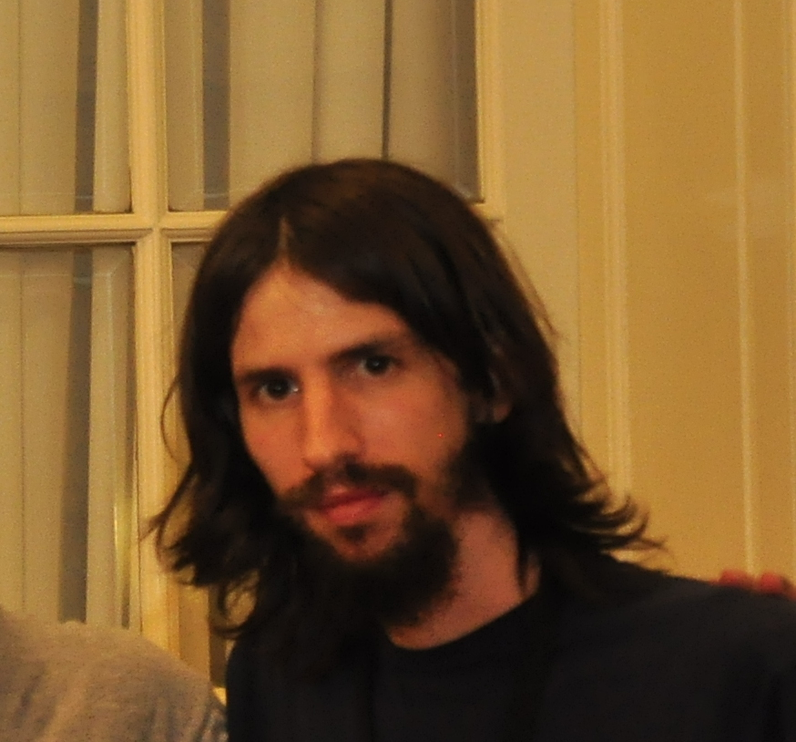

[CV] Fernando Sanz

Datos personales
| DNI 31963814 |
| 11/12/1985 (30 Años) |
| correo@fernando.com.ar |
| cypher@cypher.com.ar (XMPP) |
| Buenos Aires |
| Español (Natal) |
| Inglés (Avanzado) |
| Secundario: E.T. Nº 7 Fernando Fader |
Conocimientos
| GNU/Linux Nginx Apache AWS Seguridad |
| PHP JavaScript Node.js CSS + Responsive HTML5 SQL MySQL PostgreSQL PostGIS Mapnik OSM SVN GIT OpenLayers Leaflet Gulp Grunt Bower Webpack Yeoman |
| Automatización REST JSON XML Web Semántica XMPP |
| FLOSS Open Data Linked Data Shell Scripting Open Standards Licencias de Software Neocartografía |
| Ansias de conocimiento |
Ponencias / Speaker
|
Experiencia

House of Chef TV2016 - Presente |
| CTO & Dev: House of Chef es una compañia de medios que produce y emite contenido de nicho de alta calidad. Desarrollo y mantengo la plataforma basada en AWS, Node.js, Express.js y nuevas buenas prácticas para asegurar alta disponibilidad, redundacia, transcoding de última tecnología, multilenguaje, balanceo de carga y escalamiento automatizado sin perder el foco en la seguridad. (houseofchef.online) |

Torguen2015 - Presente |
| Co-fundador, CTO: Torguen es una placa controladora de acceso completamente diseñada y manufacturada en Argentina, con soporte RFID y una aplicación open source opcional con funcionalidades novedosas únicas y probablemente la mayor seguridad en el mercado internacional. Actualmente trabajamos en la integración de la tecnología Blockchain. (torguen.com.ar) |

Shovel Apps2015 |
| Consultor, desarrollo: En este proyecto diseñamos e implementamos satisfactoriamente un CMS open source para aplicaciones móbiles, con un modelo SaaS así como tambien una versión self-hosted y descargable. (shovelapps.com) |

Entornos Educativos2014 - 2015 |
| CIO: Optimización de infraestructura y maniobras de datos de grandes dimensiones para plataformas de e-learning de compañías de primera línea.(entornos.com.ar) |

State of the Map 2014 - stateofthemap.org2014 |
| Sitio del evento internacional State of the Map, que reúne a los aficionados a la cartografía libre y colaborativa, a llevarse a cabo en Buenos Aires en su 8va edición. |
OpenStreetMap.org.ar2013 - Presente |
| Fundé el capítulo argentino de OpenStreetMap, desarrollo y mantengo por completo toda la infraestructura. El objetivo es regionalizar la cartografía de OSM para el público argentino. |

Deytec.com - Desarrollos y Tecnología2008 - 2013 |
| En el año 2008 retorné a mi país y co-fundé junto a dos socios una empresa de desarrollos tecnológicos, en la cual me desempeñé en investigación, desarrollo y administración de servidores. Vendí mi participación y di un paso al costado para volcarme al mundo de la neocartografía. |
Desarrollador independiente (Costa Rica)2007 |
| Antes de fundar un emprendimiento propio, realicé proyectos personales y desarrollos para clientes y empresas de outsourcing. |
Akbar Soluciones S.A. (Costa Rica)2006 |
| Programador de aplicaciones de Facturación, Control de Stock, Contabilidad. Mantenimiento de servidores. |

Taringa.net2004 - 2007 |
| Fundé y mantuve la red social Taringa! hasta el momento de su venta en 2007. |
Desarrollador independiente2003 - 2005 |
| Si bien he comenzado a programar por interés propio a los 15 años, inicié mis actividades laborales como programador a los 17, actividad en la que continúo especializándome hasta la actualidad. |